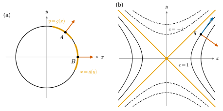

2.4 음함수 정리와 등위집합
이 절의 목표
- 음함수 정리를 정확히 진술하고 역함수 정리로부터 증명할 수 있다.
- 음함수의 전미분 \(Dg = -(D_yF)^{-1}D_xF\)를 계산할 수 있다.
- \(DF(p)\)가 전사이면 등위집합이 \(p\) 근처에서 매끄러운 그래프라는 것과, 그 위를 지나는 곡선들의 속도 전체가 \(\ker DF(p)\)라는 것을 보일 수 있다.
- 기울기를 정의하고, 기울기가 등위집합에 수직임을 설명할 수 있다.
선수 지식
동기
2.3절의 역함수 정리는 미지수와 방정식의 개수가 같은 방정식 \(F(x) = y\)를 푸는 정리였다. 미분기하에서 더 자주 만나는 것은 미지수가 방정식보다 많은 경우다. 예를 들어 원 \(x^2 + y^2 = 1\)은 미지수 둘, 방정식 하나이고, 구면 \(x^2 + y^2 + z^2 = r^2\)은 미지수 셋, 방정식 하나다. 이런 방정식의 해 집합은 점 하나가 아니라 곡선이나 곡면이 된다. 그 해 집합이 매끄러운 곡선이나 곡면이라고 말할 수 있는가?
원에서 답을 보자. 위쪽 반원에서는 방정식을 \(y\)에 대해 풀어 \(y = \sqrt{1 - x^2}\)로 쓸 수 있다. 즉 원은 그 근처에서 매끄러운 함수의 그래프다. 그러나 점 \((1, 0)\) 근처에서는 한 \(x\)에 \(y\) 값이 둘(\(\pm\sqrt{1 - x^2}\))이거나 하나도 없으므로 \(y\)에 대해 풀 수 없다. 대신 \(x = \sqrt{1 - y^2}\)로 \(x\)에 대해 풀 수 있다. 무엇이 두 경우를 가르는가? \((1, 0)\)에서는 \(\partial(x^2 + y^2)/\partial y = 2y = 0\)이다. 음함수 정리는 이 관찰을 일반화한다. 풀고 싶은 변수에 대한 편미분이 가역이면 풀 수 있다.

등위집합
정의 2.4.1 (등위집합, level set). \(F\colon U \to \R^k\)이고 \(c \in \R^k\)일 때 \(F^{-1}(c) = \{x \in U : F(x) = c\}\)를 \(F\)의 등위집합(level set)이라 한다. \(k = 1\)이고 \(U \subseteq \R^2\)이면 등위곡선, \(U \subseteq \R^3\)이면 등위곡면이라고도 부른다.
예 2.4.2. (a) 반지름 \(r\)인 원은 \(F(x, y) = x^2 + y^2\)의 등위집합 \(F^{-1}(r^2)\)이다. (b) 반지름 \(r\)인 구면 \(S^2(r)\)은 \(F(x, y, z) = x^2 + y^2 + z^2\)의 등위집합 \(F^{-1}(r^2)\)이다. (c) 안장면의 높이함수 \(f(x, y) = x^2 - y^2\)의 등위집합 \(f^{-1}(c)\)는 \(c \neq 0\)이면 쌍곡선이다(그림 2.4.1(b)). (d) 여러 방정식을 한꺼번에 써도 된다. \(F(x, y, z) = (x^2 + y^2 + z^2,\ z)\)의 등위집합 \(F^{-1}(r^2, h)\)는 구면과 평면 \(z = h\)의 교집합, 즉 \(\abs{h} \lt r\)이면 위도원이다.
비예 2.4.3 (매끄럽지 않은 등위집합). 등위집합이 언제나 매끄러운 곡선이나 곡면인 것은 아니다. (a) \(f(x, y) = x^2 - y^2\)의 등위집합 \(f^{-1}(0)\)은 두 직선 \(y = x\)와 \(y = -x\)의 합집합이다. 원점을 포함하는 어떤 열린집합 \(O\)에서도 \(f^{-1}(0) \cap O\)는 \(x\)의 함수의 그래프가 아니다. 작은 \(x \neq 0\)마다 \(y = x\)와 \(y = -x\) 두 값이 있기 때문이다. 같은 이유로 \(y\)의 함수의 그래프도 아니다. (b) \(F(x, y) = x^2 + y^2\)의 등위집합 \(F^{-1}(0)\)은 한 점 \(\{0\}\)이고, \(F^{-1}(-1)\)은 공집합이다. 두 경우 모두 문제가 생기는 점에서 \(DF = (2x\ \ \pm 2y)\)가 \(0\)이다.
음함수 정리
변수를 둘로 나눈다. \(\R^n \times \R^k = \R^{n+k}\)의 점을 \((x, y)\), \(x = (x^1, \dots, x^n)\), \(y = (y^1, \dots, y^k)\)로 쓴다. \(y\)가 풀고 싶은 변수이고, 방정식도 \(k\)개다. \(F\colon W \to \R^k\)의 야코비 행렬을 \(x\)의 열과 \(y\)의 열로 나누어
\[ DF(x, y) = \big(\,D_xF(x, y)\ \big|\ D_yF(x, y)\,\big), \qquad D_xF = \Big(\pd{F^i}{x^j}\Big)_{k \times n}, \quad D_yF = \Big(\pd{F^i}{y^l}\Big)_{k \times k} \]
로 쓴다. \(D_yF\)는 정사각행렬이다.
정리 2.4.4 (음함수 정리, implicit function theorem). \(W \subseteq \R^n \times \R^k\)가 열린집합이고 \(F\colon W \to \R^k\)가 매끄럽다고 하자. \((a, b) \in W\), \(c = F(a, b)\)이고 \(D_yF(a, b)\)가 가역이면, \(a\)를 포함하는 열린집합 \(V \subseteq \R^n\), \(b\)를 포함하는 열린집합 \(W' \subseteq \R^k\), 매끄러운 사상 \(g\colon V \to W'\)이 있어서 \(V \times W' \subseteq W\)이고
이다. 특히 \(g(a) = b\)이다. 또 모든 \(x \in V\)에서 \(D_yF(x, g(x))\)는 가역이고
이다.
이 정리가 말하는 것. \((a, b)\) 근처에서 방정식 \(F(x, y) = c\)의 해는 “\(x\)를 마음대로 정하면 \(y\)가 하나로 정해지는” 꼴이고, 그 \(y = g(x)\)는 \(x\)의 매끄러운 함수다. (2.4.1)은 존재(\(y = g(x)\)는 해다)와 유일성(\(V \times W'\) 안의 해는 그것뿐이다)을 함께 말한다. (2.4.2)는 \(g\)를 모르고도 그 전미분을 계산하게 해 준다.
증명 아이디어: \(x\)는 그대로 두고 \(y\)를 \(F(x, y)\)로 바꾸는 사상 \(\Phi(x, y) = (x, F(x, y))\)에 역함수 정리를 쓴다. \(\Phi\)의 역사상에서 둘째 성분에 \(c\)를 넣은 것이 \(g\)다.
증명. \(\Phi\colon W \to \R^n \times \R^k\), \(\Phi(x, y) = (x, F(x, y))\)로 두자. \(\Phi\)는 매끄럽고 \(D\Phi(x, y)(h, l) = \big(h,\ D_xF(x, y)h + D_yF(x, y)l\big)\)이다. \((x, y) = (a, b)\)에서 이것이 \(0\)이면 \(h = 0\)이고, 따라서 \(D_yF(a, b)l = 0\)이므로 \(l = 0\)이다. \(D\Phi(a, b)\)는 \(\R^{n+k}\)에서 자기 자신으로 가는 단사 선형사상이므로 가역이다(따름정리 1.2.10(a)). 역함수 정리에 의해 \((a, b)\)를 포함하는 열린집합 \(U_0 \subseteq W\)와 \((a, c)\)를 포함하는 열린집합 \(V_0\)이 있어서 \(\Phi|_{U_0}\colon U_0 \to V_0\)이 미분동형사상이다.
곱 모양으로 줄이기. \(U_0\)은 열린집합이므로 어떤 \(\varepsilon \gt 0\)에 대해 \(B_{2\varepsilon}((a, b)) \subseteq U_0\)이다. \(V_1 = B_\varepsilon(a) \subseteq \R^n\), \(W' = B_\varepsilon(b) \subseteq \R^k\)로 두면 \(x \in V_1\), \(y \in W'\)일 때 \(\abs{(x - a, y - b)} \le \abs{x - a} + \abs{y - b} \lt 2\varepsilon\)이므로 \(V_1 \times W' \subseteq U_0\)이다. \(\Phi\)는 \(V_1 \times W'\)에서 단사이고, 따름정리 2.3.9(b)에 의해 \(O = \Phi(V_1 \times W')\)은 열린집합이며, 역사상 \(\Psi = (\Phi|_{V_1 \times W'})^{-1}\colon O \to V_1 \times W'\)는 매끄럽다. \(\Phi\)는 첫째 성분을 바꾸지 않으므로 \(\Psi\)도 그렇다. 즉 매끄러운 \(G\)가 있어서 \(\Psi(x, z) = (x, G(x, z))\)이다.
음함수 만들기. \(V = \{x \in V_1 : (x, c) \in O\}\)로 두자. \(V_1\)에서 정의된 \(x \mapsto (x, c)\)는 연속이고 \(O\)는 열린집합이므로 \(V\)는 열린집합이고(열린집합의 연속 역상, 2.1절 준비), \(\Phi(a, b) = (a, c)\)이므로 \(a \in V\)이다. \(x \in V\)에 대해 \(g(x) = G(x, c)\)로 두면 \(g\)는 매끄럽고, \(\Psi(x, c) \in V_1 \times W'\)이므로 \(g(x) \in W'\)이다. 이제 \((x, y) \in V \times W'\)이면
\[ F(x, y) = c \iff \Phi(x, y) = (x, c) \iff (x, y) = \Psi(x, c) = (x, g(x)) \iff y = g(x) \]
이다. 둘째 동치에서 \(\Phi\)가 \(V_1 \times W'\)에서 단사이고 \((x, c) \in O\)라는 것을 썼다. 이것이 (2.4.1)이다.
전미분. \(x \in V\)이면 \((x, g(x)) \in U_0\)에서 \(\Phi\)는 미분동형사상의 일부이므로 명제 2.3.4에 의해 \(D\Phi(x, g(x))\)가 가역이고, 위와 같은 계산(\(D\Phi(0, l) = (0, D_yF\,l)\))으로 \(D_yF(x, g(x))\)가 단사, 따라서 가역이다. 모든 \(x \in V\)에서 \(F(x, g(x)) = c\)이므로 양변을 미분하면 연쇄법칙에서 \(D_xF(x, g(x)) + D_yF(x, g(x))\,Dg(x) = 0\)이다. 왼쪽에 \(\big(D_yF(x, g(x))\big)^{-1}\)을 곱하면 (2.4.2)이다.
예 2.4.5 (원). \(F(x, y) = x^2 + y^2\), \(c = r^2\) (\(r \gt 0\))이라 하자. \(n = k = 1\)이고 \(D_xF = 2x\), \(D_yF = 2y\)이다.
- 원 위의 점 \((a, b)\)에서 \(b \neq 0\)이면 \(D_yF(a, b) = 2b \neq 0\)이므로 정리 2.4.4가 적용된다. \((a, b)\) 근처에서 원은 \(y = g(x)\)의 그래프이고, (2.4.2)에서 \(g'(x) = -\dfrac{2x}{2g(x)} = -\dfrac{x}{y}\)이다. 실제로 \(b \gt 0\)이면 \(g(x) = \sqrt{r^2 - x^2}\)이고, 직접 미분하면 \(g'(x) = -x/\sqrt{r^2 - x^2}\)로 같다.
- \((\pm r, 0)\)에서는 \(D_yF = 0\)이라 정리를 \(y\)에 대해 쓸 수 없고, 실제로 동기에서 본 대로 \(y\)에 대해 풀 수 없다. 그러나 \(D_xF(\pm r, 0) = \pm 2r \neq 0\)이므로 변수의 역할을 바꾸어 \(x\)에 대해 풀 수 있다. \((r, 0)\) 근처에서 \(x = \tilde g(y) = \sqrt{r^2 - y^2}\)이다.
원의 모든 점에서 \(DF = (2x\ \ 2y) \neq 0\)이므로, 모든 점 근처에서 원은 \(x\)의 그래프이거나 \(y\)의 그래프다. 그림 2.4.1(a)는 \(r = 1\)인 경우다.
검증: verify/v-2-4-implicit-function-theorem.py
비예 2.4.6 (\(D_yF\)가 가역이 아니면 매끄러운 음함수를 기대할 수 없다). \(F(x, y) = y^3 - x\)와 \((a, b) = (0, 0)\), \(c = 0\)을 보자. \(D_yF(0, 0) = 3y^2|_{y=0} = 0\)이다. 등위집합 \(F^{-1}(0)\)은 \(y = x^{1/3}\)의 그래프이므로 \(y\)에 대해 풀리기는 하지만, 그 해 \(g(x) = x^{1/3}\)은 \(0\)에서 미분가능하지 않다(비예 2.3.3). 공식 (2.4.2)로 보면 \(g'(x) = -(-1)/(3y^2) = 1/(3x^{2/3})\)이 \(x \to 0\)일 때 발산하는 것과 맞는다. 한편 \(D_xF = -1 \neq 0\)이므로 \(x\)에 대해서는 매끄럽게 풀린다: \(x = y^3\). 비예 2.4.3(a)의 원점에서는 \(D_xF\)와 \(D_yF\)가 모두 \(0\)이고, 어느 쪽으로도 풀리지 않는다.
기울기와 등위집합의 국소적 모양
방정식이 하나(\(k = 1\))일 때는 전미분의 성분을 벡터로 모아 두면 편리하다.
정의 2.4.7 (기울기, gradient). \(f\colon U \to \R\)의 모든 편미분이 \(p\)에서 존재할 때 벡터 \[ \grad f(p) = \big(\partial_1 f(p),\ \dots,\ \partial_n f(p)\big) \in \R^n \] 을 \(p\)에서 \(f\)의 기울기(gradient)라 한다.
\(f\)가 \(p\)에서 미분가능하면 정리 2.1.11에 의해 \(Df(p)\)는 \(1 \times n\) 행렬 \((\partial_1 f(p)\ \cdots\ \partial_n f(p))\)이므로, 모든 \(v\)에 대하여
이다. 특히 \(Df(p) \neq 0\)과 \(\grad f(p) \neq 0\)은 같은 말이다. 코시-슈바르츠 부등식(정리 1.5.5)에 의해 단위벡터 \(v\)에 대해 \(D_vf(p) \le \abs{\grad f(p)}\)이고, \(\grad f(p) \neq 0\)이면 \(v = \grad f(p)/\abs{\grad f(p)}\)에서 등호가 성립한다. 즉 기울기는 \(f\)가 가장 빨리 증가하는 방향을 가리키고, 그 길이는 그 증가율이다.
예: \(\grad(x^2 + y^2) = (2x, 2y)\)는 원점에서 멀어지는 방향이고, \(\grad(x^2 - y^2) = (2x, -2y)\)이다. 비예: 미분가능하지 않은 점에서는 기울기가 있어도 (2.4.3)이 성립하지 않는다. 비예 2.1.12(b)의 \(g = x^3/(x^2 + y^2)\)는 \(\grad g(0) = (1, 0)\)이지만 \(D_{(1,1)}g(0) = 1/2 \neq 1 = \inner{(1, 0)}{(1, 1)}\)이다.
이제 음함수 정리를 등위집합의 언어로 옮기자. 어느 변수에 대해 풀어야 할지 모를 때는 \(DF(p)\)의 가역인 부분을 찾으면 된다.
따름정리 2.4.8 (등위집합은 국소적으로 그래프다). \(U \subseteq \R^n\)이 열린집합이고 \(F\colon U \to \R^k\)가 매끄러우며, \(p \in U\), \(c = F(p)\)이고 \(DF(p)\colon \R^n \to \R^k\)가 전사라 하자(따라서 \(k \le n\)). 그러면 첨자 \(1 \le j_1 \lt \dots \lt j_k \le n\), \(p\)를 포함하는 열린집합 \(O \subseteq U\), 그리고 나머지 \(n - k\)개 좌표의 매끄러운 함수 \(g\)가 있어서, \(F^{-1}(c) \cap O\)는 \(O\) 안에서 방정식 \((x^{j_1}, \dots, x^{j_k}) = g(\text{나머지 좌표})\)로 주어진다. 특히 \(k = 1\)이고 \(\grad f(p) \neq 0\)이면, \(\partial_j f(p) \neq 0\)인 \(j\)에 대해 \(p\) 근처의 등위집합은 \(x^j\)를 나머지 좌표의 함수로 쓴 그래프다.
증명. \(DF(p)\)가 전사이므로 그 행렬의 \(n\)개의 열은 \(\R^k\)를 생성한다(열들이 생성하는 부분공간이 상이다, 정의 1.2.9). 정리 1.1.18(a)에 의해 그 가운데 \(k\)개의 열 \(j_1 \lt \dots \lt j_k\)가 \(\R^k\)의 기저다. 이 열들로 만든 \(k \times k\) 행렬은 열이 일차독립이므로 단사, 따라서 가역이다. 좌표의 순서를 바꾸는 선형 동형사상 \(\Pi\colon \R^n \to \R^n\)으로 \(x^{j_1}, \dots, x^{j_k}\)를 마지막 \(k\)개 자리로 보내자(나머지 좌표는 원래 순서대로 앞에 둔다). \(\tilde F = F \circ \Pi^{-1}\)은 열린집합 \(\Pi(U)\)에서 매끄럽고, 연쇄법칙에서 \(D\tilde F(\Pi(p)) = DF(p)\Pi^{-1}\)은 \(DF(p)\)의 열의 순서를 바꾼 것이므로 마지막 \(k\)개 열, 즉 \(D_y\tilde F\)가 가역이다. 정리 2.4.4를 \(\tilde F\)에 쓰고 \(O = \Pi^{-1}(V \times W')\)로 두면 된다(\(\Pi\)는 미분동형사상이므로 \(O\)는 열린집합이다). \(k = 1\)이면 \(DF(p) = Df(p)\)가 전사라는 것은 \(\grad f(p) \neq 0\)과 같고, 가역인 \(1 \times 1\) 부분은 \(0\)이 아닌 성분 \(\partial_j f(p)\) 하나다.
예 2.4.9 (구면). \(F(x, y, z) = x^2 + y^2 + z^2\)이라 하면 \(S^2(r) = F^{-1}(r^2)\)이고 \(\grad F(x, y, z) = 2(x, y, z)\)이다. 구면 위의 점은 원점이 아니므로 모든 점에서 \(\grad F \neq 0\)이다. 따름정리 2.4.8에 의해 구면의 모든 점 근처에서 구면은 한 좌표를 나머지 두 좌표의 매끄러운 함수로 쓴 그래프다. 구체적으로 \(z \neq 0\)인 점 근처에서는 \(z = \pm\sqrt{r^2 - x^2 - y^2}\)(부호는 \(z\)의 부호), \(z = 0\)이면 \(x\) 또는 \(y\)가 \(0\)이 아니므로 \(x = \pm\sqrt{r^2 - y^2 - z^2}\) 또는 \(y = \pm\sqrt{r^2 - x^2 - z^2}\)이다. 북극 근처의 그래프 함수는 예 2.2.18에서 2차까지 전개한 함수다. (2.4.2)로 계산하면 \(z = g(x, y)\)의 전미분은 \(Dg = -(2z)^{-1}(2x\ \ 2y) = (-x/z\ \ -y/z)\)이고, 이것은 그 예의 \(\partial_x f = -x/f\), \(\partial_y f = -y/f\)와 같다.
검증: verify/v-2-4-implicit-function-theorem.py
등위집합이 \(p\) 근처에서 그래프라면, 그 “접하는 방향”은 무엇인가? 등위집합 위에 머무는 곡선의 속도를 모으면 된다.
명제 2.4.10 (등위집합 위 곡선의 속도). \(F\colon U \to \R^k\)가 매끄럽고 \(p \in U\), \(c = F(p)\)라 하자.
- (a) \(\alpha\colon I \to U\)가 미분가능한 곡선이고 모든 \(t\)에서 \(F(\alpha(t)) = c\), \(\alpha(t_0) = p\)이면 \(DF(p)\,\alpha'(t_0) = 0\)이다. \(k = 1\)이면 \(\inner{\grad F(p)}{\alpha'(t_0)} = 0\)이다.
- (b) \(DF(p)\)가 전사이면, 모든 \(v \in \ker DF(p)\)에 대하여 매끄러운 곡선 \(\alpha\colon (-\varepsilon, \varepsilon) \to F^{-1}(c)\)가 있어서 \(\alpha(0) = p\), \(\alpha'(0) = v\)이다.
따라서 \(DF(p)\)가 전사이면, \(p\)를 지나며 등위집합 \(F^{-1}(c)\) 위에 머무는 곡선들의 \(p\)에서의 속도 전체는 정확히 \(\ker DF(p)\)이고, 이것은 \(n - k\)차원 부분공간이다.
증명. (a) \(F \circ \alpha\)는 상수이므로 도함수가 \(0\)이고, 따름정리 2.2.2에서 \(0 = (F \circ \alpha)'(t_0) = DF(p)\alpha'(t_0)\)이다. \(k = 1\)이면 (2.4.3)이다.
(b) 따름정리 2.4.8의 증명에서처럼 좌표의 순서를 바꾸면(\(\Pi\)는 선형이므로 곡선과 속도를 그대로 옮긴다) \(p = (a, b)\)이고 \(D_yF(a, b)\)가 가역이라 해도 된다. \(v = (u, w)\), \(u \in \R^n\), \(w \in \R^k\)로 쓰면 \(DF(p)v = D_xF(a, b)u + D_yF(a, b)w = 0\)이므로 \(w = -D_yF(a, b)^{-1}D_xF(a, b)u = Dg(a)u\)이다((2.4.2)). \(V\)가 열린집합이므로 작은 \(\varepsilon\)에 대해 \(\abs{t} \lt \varepsilon\)이면 \(a + tu \in V\)이고, \(\alpha(t) = (a + tu,\ g(a + tu))\)는 (2.4.1)에 의해 등위집합 위에 있다. \(\alpha(0) = (a, g(a)) = p\)이고, 연쇄법칙에서 \(\alpha'(0) = (u,\ Dg(a)u) = (u, w) = v\)이다.
마지막 문장: (a)는 속도들이 \(\ker DF(p)\)에 들어 있음을, (b)는 \(\ker DF(p)\)의 모든 벡터가 속도임을 말한다. \(DF(p)\)의 계수가 \(k\)이므로 정리 1.2.8에 의해 \(\dim\ker DF(p) = n - k\)이다.
\(k = 1\)이면 명제 2.4.10은 “기울기는 등위집합에 수직이다”라는 익숙한 문장이 된다. 계산 예로 확인하자.
예 2.4.11 (쌍곡선 \(x^2 - y^2 = 1\)). \(f(x, y) = x^2 - y^2\)과 점 \(q = (\sqrt2, 1)\)을 보자. \(f(q) = 2 - 1 = 1\)이고 \(\grad f(q) = (2\sqrt2,\ -2) \neq 0\)이다.
- \(y\)에 대해 풀기. \(\partial_y f(q) = -2 \neq 0\)이므로 \(q\) 근처에서 \(y = h(x)\)이고 (2.4.2)에서 \(h'(\sqrt2) = -\dfrac{\partial_x f(q)}{\partial_y f(q)} = -\dfrac{2\sqrt2}{-2} = \sqrt2\)이다. 실제로 \(h(x) = \sqrt{x^2 - 1}\)이고 \(h'(x) = x/\sqrt{x^2 - 1}\)이므로 \(h'(\sqrt2) = \sqrt2/1 = \sqrt2\)이다.
- \(x\)에 대해 풀기. \(\partial_x f(q) = 2\sqrt2 \neq 0\)이므로 \(x = \tilde h(y)\)로도 풀리고 \(\tilde h'(1) = -\dfrac{-2}{2\sqrt2} = \dfrac{1}{\sqrt2}\)이다. \(\tilde h = h^{-1}\)이므로 \(h'(\sqrt2)\,\tilde h'(1) = 1\)과 맞는다.
- 접선 방향과 기울기. \(\ker Df(q) = \{v : 2\sqrt2 v^1 - 2v^2 = 0\} = \Span\big((1, \sqrt2)\big)\)이다. 곡선 \(t \mapsto (\sqrt2 + t,\ h(\sqrt2 + t))\)의 속도가 \((1, h'(\sqrt2)) = (1, \sqrt2)\)이므로 명제 2.4.10과 맞고, \(\inner{\grad f(q)}{(1, \sqrt2)} = 2\sqrt2 - 2\sqrt2 = 0\)이다(그림 2.4.1(b)).
검증: verify/v-2-4-implicit-function-theorem.py
요약
- 음함수 정리: \(F(a, b) = c\)이고 \(D_yF(a, b)\)가 가역이면 \((a, b)\) 근처에서 \(F(x, y) = c \iff y = g(x)\)인 매끄러운 \(g\)가 있다. \(Dg = -(D_yF)^{-1}D_xF\)이다(정리 2.4.4).
- 증명은 \(\Phi(x, y) = (x, F(x, y))\)에 역함수 정리를 쓰는 것이다.
- \(DF(p)\)가 전사이면 등위집합은 \(p\) 근처에서 \(k\)개 좌표를 나머지의 매끄러운 함수로 쓴 그래프다(따름정리 2.4.8). 기울기가 \(0\)인 점에서는 등위집합이 엇갈리거나 점으로 줄어들 수 있다.
- 그때 등위집합 위를 지나는 곡선들의 속도 전체는 \(\ker DF(p)\)이다. 방정식이 하나이면 기울기 \(\grad f\)가 등위집합에 수직이다(명제 2.4.10).
다음 절에서는 전미분의 계수가 \(n\)(역함수 정리)이나 \(k\)(음함수 정리)처럼 “꽉 찬” 경우가 아니라 일반적인 값 \(r\)로 일정한 경우를 다룬다. 계수정리는 그런 사상이 좌표를 잘 고르면 선형사상 \((x^1, \dots, x^n) \mapsto (x^1, \dots, x^r, 0, \dots, 0)\)처럼 생겼다고 말한다.
연습문제
연습 2.4.1 ★ 데카르트의 엽선 \(x^3 + y^3 - 3xy = 0\) 위에서 정리 2.4.4로 \(y\)에 대해 풀 수 없는 점을 모두 구하여라. 점 \((3/2, 3/2)\) 근처에서 \(y = g(x)\)로 풀 때 \(g'(3/2)\)를 구하여라.
풀이
\(F = x^3 + y^3 - 3xy\)이면 \(\partial_y F = 3y^2 - 3x\), \(\partial_x F = 3x^2 - 3y\)이다. 곡선 위에서 \(\partial_y F = 0\)이면 \(x = y^2\)이고, 이것을 방정식에 넣으면 \(y^6 + y^3 - 3y^3 = y^3(y^3 - 2) = 0\)이다. 따라서 \((x, y) = (0, 0)\) 또는 \((2^{2/3}, 2^{1/3})\)이다. 이 두 점에서만 정리를 \(y\)에 대해 쓸 수 없다. \((3/2, 3/2)\)은 곡선 위에 있고(\(27/8 + 27/8 - 27/4 = 0\)), \(\partial_x F = \partial_y F = 27/4 - 9/2 = 9/4\)이므로 \(g'(3/2) = -(9/4)/(9/4) = -1\)이다.
검증: verify/v-2-4-implicit-function-theorem.py
연습 2.4.2 ★ \(F(x, y, z) = (x^2 + y^2 + z^2,\ z)\)와 \(0 \lt \abs{h} \lt r\)에 대하여, 등위집합 \(F^{-1}(r^2, h)\)(위도원)의 모든 점에서 \(DF\)가 전사임을 보이고, 점 \(p = (x, y, h)\)에서 \(\ker DF(p)\)를 구하여라.
풀이
\(DF = \begin{pmatrix} 2x & 2y & 2z \\ 0 & 0 & 1 \end{pmatrix}\)이다. 등위집합 위에서는 \(x^2 + y^2 = r^2 - h^2 \gt 0\)이므로 \((x, y) \neq 0\)이고, 예를 들어 \(x \neq 0\)이면 첫째와 셋째 열 \((2x, 0)\), \((2z, 1)\)이 일차독립이므로 계수가 \(2\), 즉 전사다(\(y \neq 0\)이면 둘째 열을 쓴다). \(DF(p)v = 0\)은 \(2xv^1 + 2yv^2 + 2hv^3 = 0\), \(v^3 = 0\)이므로 \(\ker DF(p) = \{v : xv^1 + yv^2 = 0,\ v^3 = 0\} = \Span\big((-y, x, 0)\big)\)이다. 이것은 예 2.2.6의 위도원의 속도 방향과 같다.
연습 2.4.3 ★ 참인지 거짓인지 판별하고 이유를 대어라. (a) \(Df(p) = 0\)이면 \(f^{-1}(f(p))\)는 \(p\) 근처에서 그래프가 아니다. (b) \(DF(p)\)가 전사이면 \(F^{-1}(F(p))\)는 \(p\) 근처에서 그래프다. (c) 정리 2.4.4에서 \(F(x, h(x)) = c\)를 만족하는 사상 \(h\colon V \to W'\)은 \(g\)뿐이다. (d) \(p\)를 지나며 등위집합 \(f^{-1}(f(p))\) 위에 머무는 미분가능한 곡선의 속도는 \(\grad f(p)\)에 수직이다.
힌트
(a)는 \(f(x, y) = (x - y)^3\)을 보아라.
풀이
(a) 거짓. \(f = (x - y)^3\)이면 \(f^{-1}(0)\)은 직선 \(y = x\)로 그래프이지만, 그 위의 모든 점에서 \(Df = 3(x - y)^2(1\ \ -1) = 0\)이다. 정리 2.4.4는 충분조건일 뿐이다.
(b) 참. 따름정리 2.4.8.
(c) 참. \(x \in V\)이면 \((x, h(x)) \in V \times W'\)이고 \(F(x, h(x)) = c\)이므로 (2.4.1)에 의해 \(h(x) = g(x)\)이다.
(d) 참. 명제 2.4.10(a). 이 부분은 \(Df(p) \neq 0\)을 가정하지 않아도 성립한다.
연습 2.4.4 ★ 구면 \(x^2 + y^2 + z^2 = r^2\)을 북극 \((0, 0, r)\) 근처에서 \(z = g(x, y)\)로 풀 때, (2.4.2)로 \(Dg(0, 0)\)을 구하고 예 2.2.18의 전개와 비교하여라.
풀이
\(D_xF = (2x\ \ 2y)\), \(D_yF = 2z\)(여기서 “\(y\)” 변수는 \(z\) 하나)이므로 \(Dg(x, y) = -(2z)^{-1}(2x\ \ 2y) = (-x/z\ \ -y/z)\)이고 \(Dg(0, 0) = (0\ \ 0)\)이다. 예 2.2.18에서 \(g(h) = r - \abs{h}^2/(2r) + R_2(h)\)였고, 1차항이 없으므로 \(Dg(0) = 0\)과 맞는다. 북극에서 접하는 방향은 \(\ker DF(0, 0, r) = \{v^3 = 0\}\), 즉 수평면이다.
연습 2.4.5 ★★ 원뿔 \(C = \{(x, y, z) : x^2 + y^2 - z^2 = 0\}\)은 원점을 포함하는 어떤 열린집합 \(O\)에서도 \(C \cap O\)가 세 좌표평면 중 어느 것 위의 그래프도 아님을 보여라. 원점에서 \(\grad(x^2 + y^2 - z^2)\)는 무엇인가?
풀이
\(O\)가 \(B_\varepsilon(0)\)을 포함한다고 하자. \(xy\) 평면 위의 그래프가 아니다: \(0 \lt t \lt \varepsilon/2\)이면 \((t, 0, t)\)와 \((t, 0, -t)\)가 모두 \(C \cap B_\varepsilon(0)\)에 있으므로, 한 \((x, y) = (t, 0)\)에 \(z\) 값이 둘이다. \(xz\) 평면 위의 그래프가 아니다: 같은 범위의 \(t\)에 대해 \((0, t, t)\)와 \((0, -t, t)\)가 모두 \(C \cap B_\varepsilon(0)\)에 있으므로, 한 \((x, z) = (0, t)\)에 \(y\) 값이 둘이다. \(yz\) 평면: \((t, 0, t)\)와 \((-t, 0, t)\)로 같은 논증을 쓴다. 원점에서 기울기는 \((2x, 2y, -2z)|_0 = 0\)이다. 따라서 따름정리 2.4.8의 가정이 성립하지 않고, 실제로 결론도 성립하지 않는다.
연습 2.4.6 ★★ (라그랑주 승수법) \(f, F\colon U \to \R\)가 매끄럽고 \(p \in F^{-1}(c)\), \(\grad F(p) \neq 0\)이라 하자. \(p\)를 포함하는 어떤 열린집합 \(O\)가 있어서 모든 \(x \in F^{-1}(c) \cap O\)에서 \(f(x) \le f(p)\)이면, \(\grad f(p) = \lambda\,\grad F(p)\)인 \(\lambda \in \R\)가 있음을 보여라. 이것으로 원 \(x^2 + y^2 = 1\) 위에서 \(x + y\)의 최댓값을 구하여라.
힌트
명제 2.4.10(b)의 곡선을 따라 \(f\)를 미분한다. 그다음 \(\grad f(p)\)를 \(\grad F(p)\) 방향과 그에 수직인 성분으로 나눈다.
풀이
\(u = \grad F(p)\)라 하자. \(v \in \ker DF(p)\), 즉 \(\inner{u}{v} = 0\)이면 명제 2.4.10(b)의 곡선 \(\alpha\)(\(\alpha(0) = p\), \(\alpha'(0) = v\))가 있고, \(t\)가 작으면 \(\alpha(t) \in F^{-1}(c) \cap O\)이다. \(t \mapsto f(\alpha(t))\)는 \(t = 0\)에서 최댓값을 가지므로 도함수가 \(0\)이고, 따름정리 2.2.2와 (2.4.3)에서 \(\inner{\grad f(p)}{v} = 0\)이다. 이제 \(w = \grad f(p)\)를 \(w = \lambda u + w'\), \(\lambda = \inner{w}{u}/\abs{u}^2\)로 쓰면 \(\inner{w'}{u} = 0\)이다. 방금 보인 것을 \(v = w'\)에 쓰면 \(\inner{w}{w'} = 0\)이므로 \(\abs{w'}^2 = \inner{w - \lambda u}{w'} = 0 - 0 = 0\), 즉 \(w = \lambda u\)이다.
예: \(f = x + y\), \(F = x^2 + y^2\), \(c = 1\). 원 \(F^{-1}(1)\)은 유계이고 닫힌집합이다(여집합 \(F^{-1}(\R \setminus \{1\})\)이 열린집합의 연속 역상이다). 따라서 연속함수 \(f\)는 원 위에서 최댓값을 가진다. 이것은 최댓값·최솟값 정리로, 미적분학에서 알려진 사실로 받아들인다(2.1절 준비. 증명은 정리 3.6.7과 정리 3.6.10). 최댓점 \(p\)에서는 원 위의 모든 \(x\)에 대해 \(f(x) \le f(p)\)이고 원 위에서 \(\grad F = (2x, 2y) \neq 0\)이므로, 위의 결과를 \(O = \R^2\)로 쓸 수 있다. 최댓점에서 \((1, 1) = \lambda(2x, 2y)\)이므로 \(x = y = 1/(2\lambda)\)이고, \(x^2 + y^2 = 1\)에서 \(x = y = \pm 1/\sqrt2\)이다. \(f\)의 값은 \(\pm\sqrt2\)이므로 최댓값은 \(\sqrt2\)이고 \((1/\sqrt2, 1/\sqrt2)\)에서 얻는다.
검증: verify/v-2-4-implicit-function-theorem.py
연습 2.4.7 ★★★ \(2 \times 2\) 행렬 \(\begin{pmatrix} a & b \\ c & d \end{pmatrix}\)을 \(\R^4\)의 점 \((a, b, c, d)\)로 보고 \(\det(a, b, c, d) = ad - bc\)라 하자. (a) \(\det^{-1}(1)\)의 모든 점에서 \(\grad\det \neq 0\)임을 보이고, 단위행렬 근처에서 \(\det^{-1}(1)\)을 그래프로 나타내어라. (b) 단위행렬 \(I\)를 지나며 \(\det^{-1}(1)\) 위에 머무는 곡선들의 \(I\)에서의 속도 전체가 대각합이 \(0\)인 행렬 전체임을 보여라.
풀이
(a) \(\grad\det = (d, -c, -b, a)\)이다. 이것이 \(0\)이면 \(a = b = c = d = 0\)이라 \(\det = 0 \neq 1\)이므로, \(\det^{-1}(1)\) 위에서는 \(\grad\det \neq 0\)이다. \(I = (1, 0, 0, 1)\)에서 \(\partial_d\det = a = 1 \neq 0\)이므로 따름정리 2.4.8에 의해 \(I\) 근처에서 \(d\)를 나머지의 함수로 풀 수 있다. 실제로 \(a \neq 0\)이면 \(ad - bc = 1 \iff d = (1 + bc)/a\)이므로, \(I\) 근처에서 \(\det^{-1}(1)\)은 \(d = (1 + bc)/a\)의 그래프다(3개의 자유로운 좌표 \(a, b, c\)).
(b) 명제 2.4.10에 의해 그 속도 전체는 \(\ker D\det(I)\)이다. \(D\det(I)(H) = \inner{\grad\det(I)}{H} = \inner{(1, 0, 0, 1)}{(h_{11}, h_{12}, h_{21}, h_{22})} = h_{11} + h_{22}\)이므로 \(\ker D\det(I) = \{H : \tr H = 0\}\)이다(따름정리 1.4.13의 대각합). 이것은 \(3\)차원이다. (\(\det^{-1}(1)\)은 행렬식이 \(1\)인 행렬들의 군이고, 20장에서 리 군의 예로 다시 나온다.)
검증: verify/v-2-4-implicit-function-theorem.py